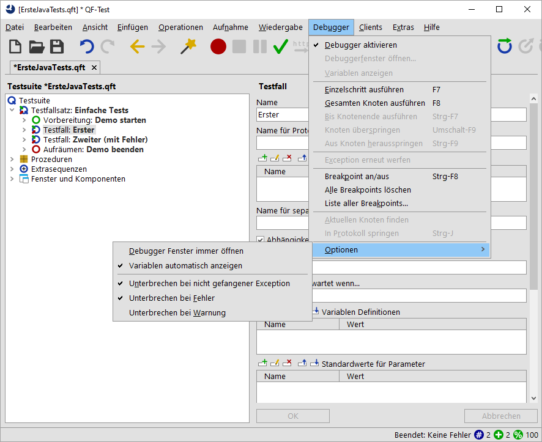
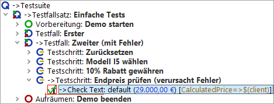
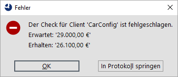

| Version 6.0.3 |
Beim Debuggen eines Tests ist es oft hilfreich, wenn die Testausführung genau dann stoppt und in den Debug-Modus gewechselt wird, wenn ein Fehler, eine Exception oder manchmal auch nur eine Warnung auftritt.
Mittels dieser Technik werden wir in diesem Abschnitt und dem nächsten den zweiten Testfall debuggen.
Wenn Sie nun das Debugger-Menü und das Optionen-Untermenü wieder öffnen sollte es wie folgt aussehen:
|
|  | ||
|
| Abbildung 5.10: Debugger-Optionen: Test bei Fehler anhalten | ||
Wir müssen die Debugger-Optionen ändern, da sonst der Test einfach durchlaufen würde, analog zu den vorherigen Beispielen aus Kapitel eins und zwei.
QF-Test hält bei dem fehlerhaften Knoten an und wechselt in den Debug-Modus:
|
|  | ||
|
| Abbildung 5.11: QF-Test pausiert bei Fehler | ||
Der Knoten, der den Fehler verursacht hat, wird durch ein rotes Quadrat markiert. Außerdem erscheint ein Fehlerdialog, der uns Näheres zur Fehlerursache mitteilt. Über diesen wechseln wir in das Protokoll, das wie so oft der Schlüssel zur Fehlerbehebung ist.
|
|  | ||
|
| Abbildung 5.12: Fehlermeldung | ||
| Letzte Änderung: 6.9.2022 Copyright © 2002-2022 Quality First Software GmbH |